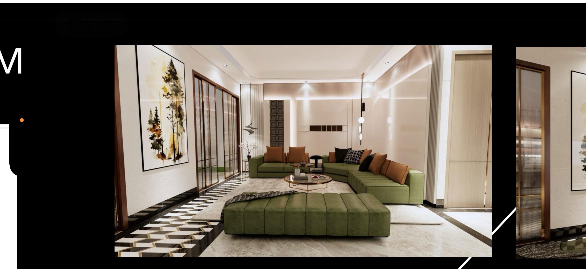
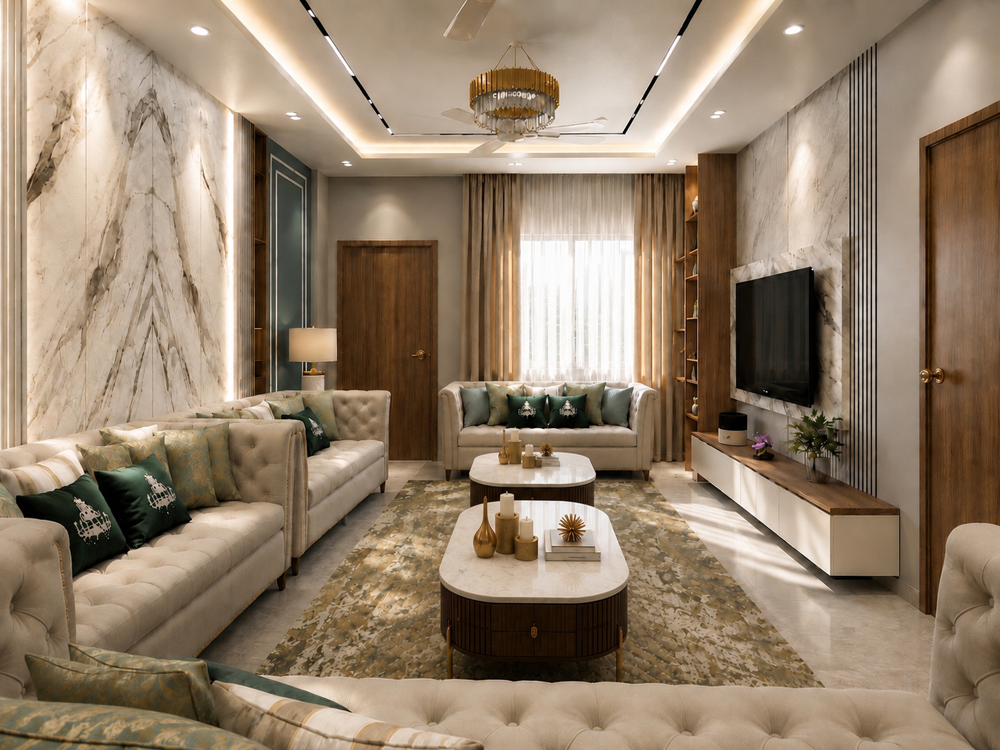
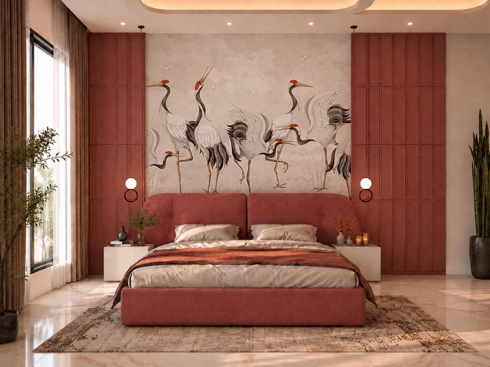
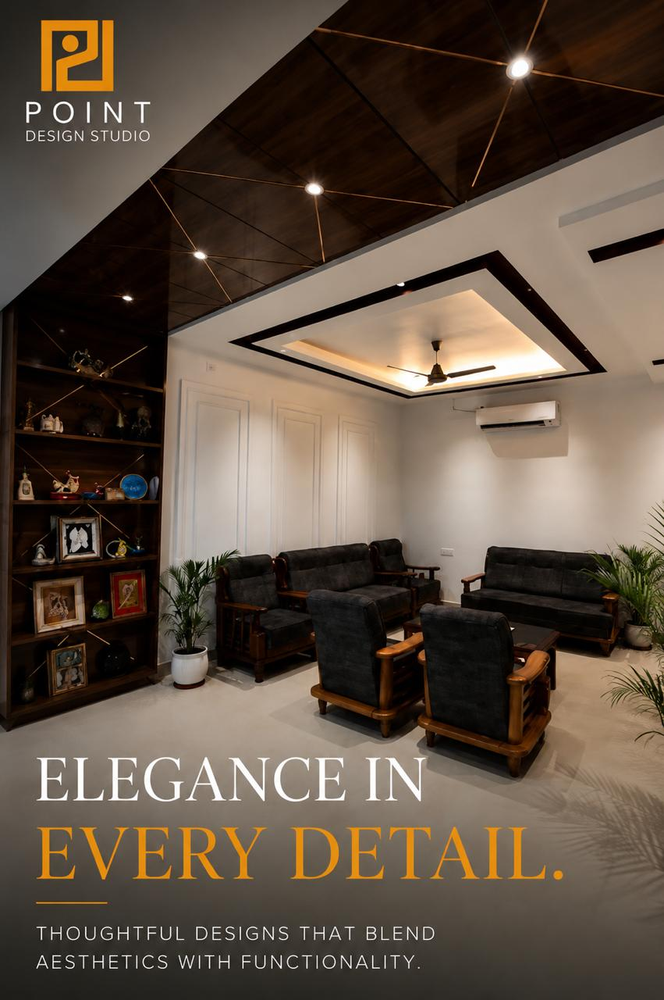
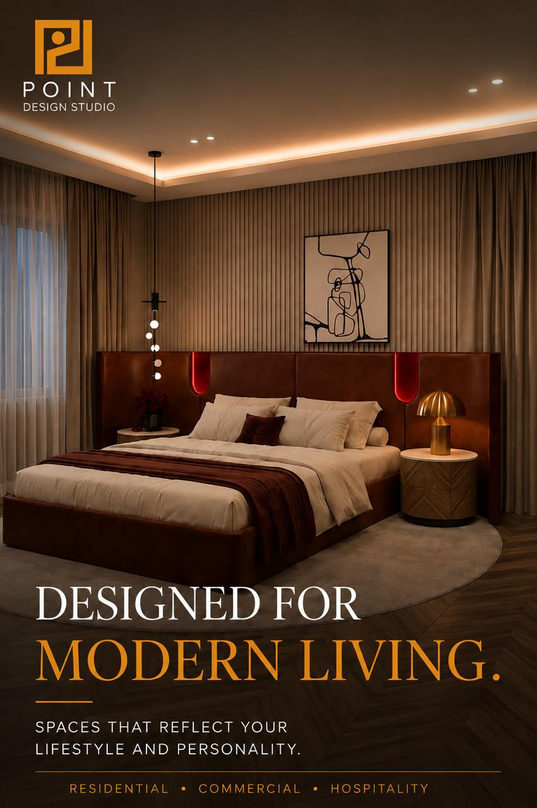
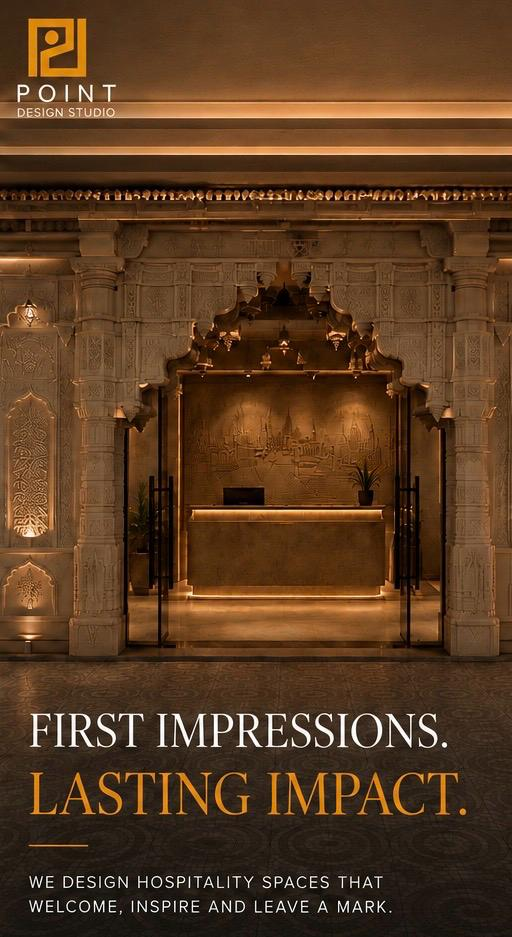
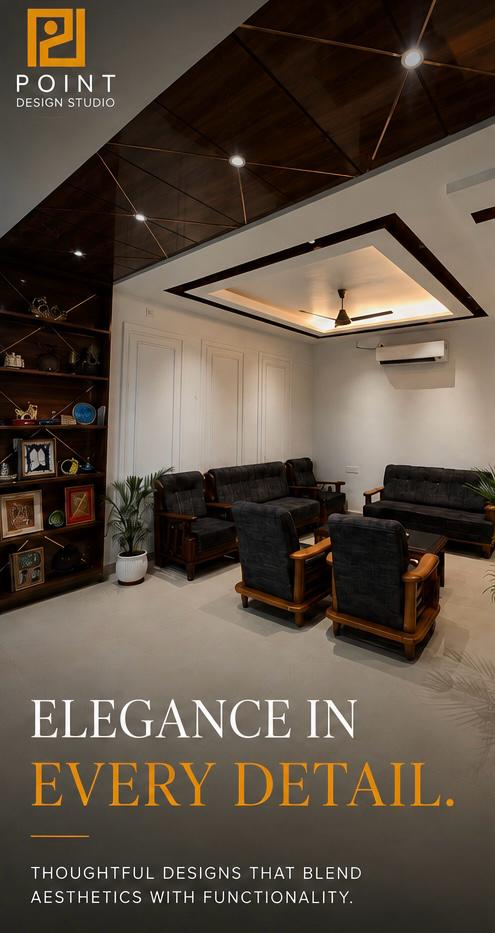
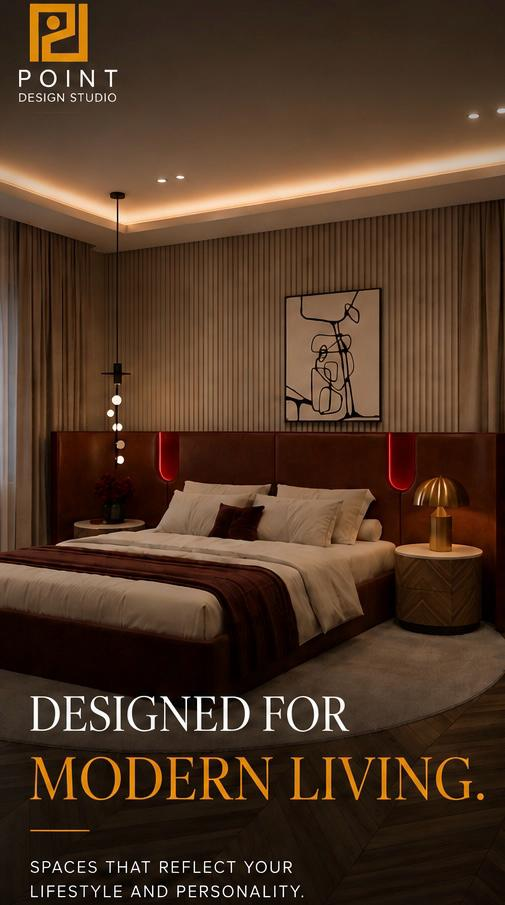
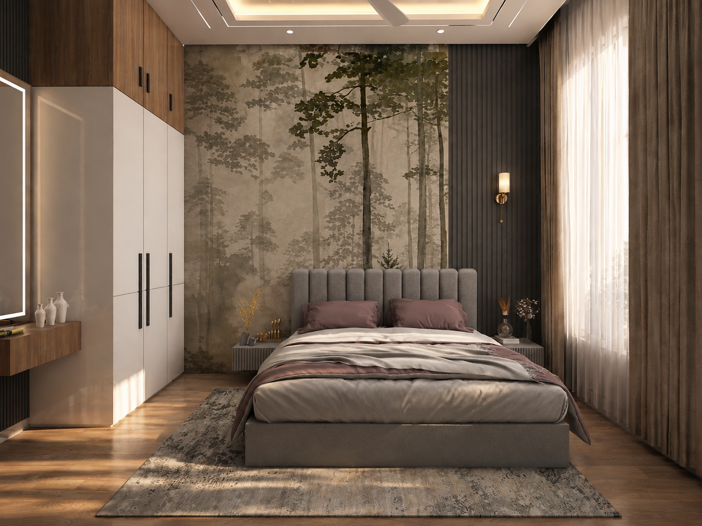

Architecture & interiors · Varanasi & eastern Uttar Pradesh
Spaces that
feel like you.
Thoughtful architecture and interiors for homes, workplaces, and spaces made to be experienced.
Explore our work ↓
DESIGNED AROUND YOU
About Point Design Studio
It all starts with a point.
Established in 2019, Point Design Studio is an architectural and interior design practice based in Varanasi, built on a simple idea: every great space begins with a single point. A point extends into a line, lines come together to form shapes, and shapes take form as spaces that people live, work, and experience.
We bring this philosophy to life through thoughtful design, purposeful planning, and a keen eye for detail, creating spaces that balance aesthetics, functionality, and the way people experience them.
For us, design is not just about how a space looks. It’s about how it works, feels, and stays with you.
Start a conversation ↗

Our point of view
Comfort is never an afterthought. It is the measure of good design.
Selected showcase
Spaces with a
lasting impression.
Scroll to explore a selection of residential and hospitality work from Point Design Studio.





← Drag or scroll to explore →
What we do
From first idea
to final detail.
- 01
Architectural design
Concepts and planning that give every project a clear, purposeful foundation.
↗ - 02
Interior design
Personal, considered interiors shaped around your everyday rhythms.
↗ - 03
Residential & commercial fit-out
Spaces that work beautifully—from intimate homes to purposeful workplaces.
↗ - 04
Planning & styling
Material, furniture, and finishing decisions that make a design feel complete.
↗

A clear, collaborative process
A smooth journey, from vision to reality.
01 — DiscoverWe get to know your life, goals, site, and sense of style.
02 — DefineWe translate the brief into a material-led creative direction.
03 — DesignPlans, details, and visualisations make the future feel tangible.
04 — DeliverWe guide execution with care until the final handover.
“Architecture should speak of its time and place, but yearn for timelessness.”
— Frank GehryVaranasi · eastern Uttar Pradesh
Have a space
in mind?
info@pointdesignstudio.com ↗Tell us a little about your project in Varanasi or eastern Uttar Pradesh, and we’ll be in touch.